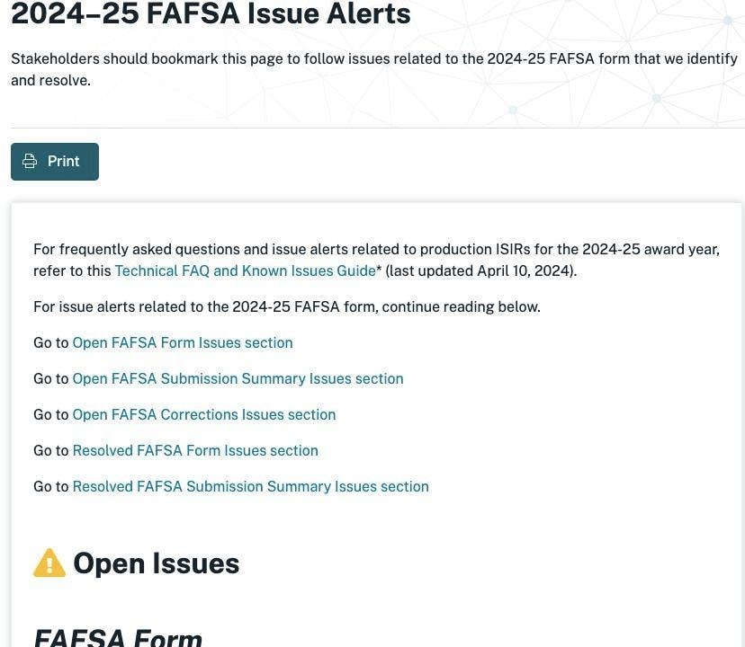

Colleges Refusing To Extend Deposit Deadlines Get An F In ConsiderationThe problems of the redesigned Free Application for Federal Student Aid (FAFSA) have seemingly been endless. But they are just continuing. In late March, a vendor calculation error affecting hundreds of thousands of applications was discovered, CNN reported. They again reported, this month, an error with the transfer of tax information from the IRS that will affect another million forms. The Education Department has been transparent about the difficulties. Officials have posted a website, with lists of open and resolved issues. Most of the open issues have workarounds, but some remain unresolved. The sheer volume of the list is overwhelming. The effects have been dramatic. As of late March, Vox reported 40% fewer forms have been filed by first-time filers compared to this time last year, according to a National College Attainment Network analysis of Department of Education data. The response by most colleges has been sensitive and responsive. The National Association for College Admission Counseling surveyed its members, and a far majority of its 2000 respondents were extending their deposit deadlines, most frequently to May 15 or June 1. According to the NACAC Enrollment Deadline Directory, there is a small group of highly selective, well-endowed colleges, including Barnard, Bates, Boston College, BU, Bucknell, Franklin and Marshall, Lafayette, Macalester, Notre Dame, Pomona, Oberlin, Sarah Lawrence, Syracuse, University of Richmond, and the University of Southern California, that are not extending their deadlines. These colleges require the more detailed CSS Profile, which provides most of the FAFSA data and other information such as noncustodial parent income and assets, housing equity, and retirement savings. They can use this information to determine the level of aid for each student, including a pretty reliable estimate of the federal aid in the absence of timely Department of Education data . They are also financially secure enough to be able to absorb any cases where their estimates are off and they have to cover the shortfall. Sunni Brown, Director of Media and Public Relations at the University of Richmond, noted that admitted students have received their financial aid offers and “we are now working with FAFSA data to determine what portion of their need-based grant is being funded by state, federal and university grant.” She continued that Richmond meets full demonstrated need and “were able to provide financial aid offers well in advance of the May 1 deadline.” Similarly, Lauren Bartlett, the USC Associate Vice President, Strategic and Crisis Communications noted, “We have provided our admitted students with estimated financial aid packages and advised that they may notify USC of their enrollment decision by May 1 and request a commitment deposit waiver if they have financial aid concerns related to FAFSA delays.” All these colleges will be flexible with students who have not received financial aid offers from other colleges to which they applied. At this point, in mid-April, issues are still arising with the submission or processing of FAFSA forms. Many if not most students will likely not have financial aid award letters from all colleges that admit them by May 1. If they do get them between now and May 1, these colleges are asking students who are incredibly stressed about this process to make one of the biggest decisions of their lives in less than two weeks. This is a relatively small number of elite colleges with the resources to deal with the morass of extension requests they will need to deal with. Of greater concern is the decision of a college like the University of Arizona to stick with its May 1 deadline. This affects the school’s approximately 75,000 accepted students. Historically University of Arizona’s enrollment data show that more than 25% of its incoming class is Pell-eligible and more than 25% first generation. During the COVID epidemic, a small number of highly selective colleges chose not to be test-optional, because they had the cache, the application numbers, and the wealth to make decisions in their best interest rather than that of the students. We are at this same inflection point. Just because colleges have the resources to maintain the May 1 deadline, does not mean they should. A coalition of organizations has called on colleges to extend their deposit deadlines. Those most affected by this fiasco are the most financially vulnerable of college applicants. To maintain a May 1 deadline even with the possibility of an extension, is putting greater stress on already highly stressed students and families. |
 |